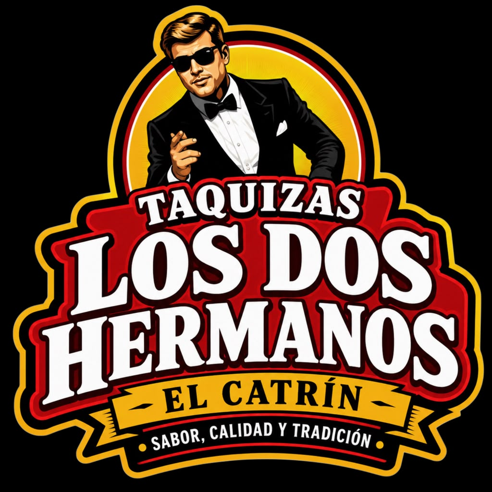
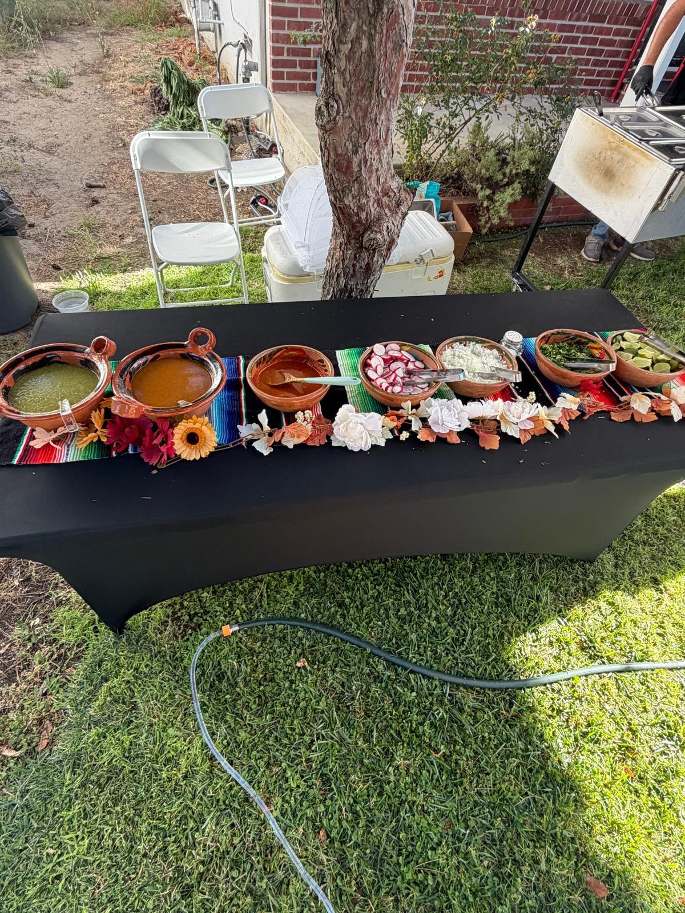
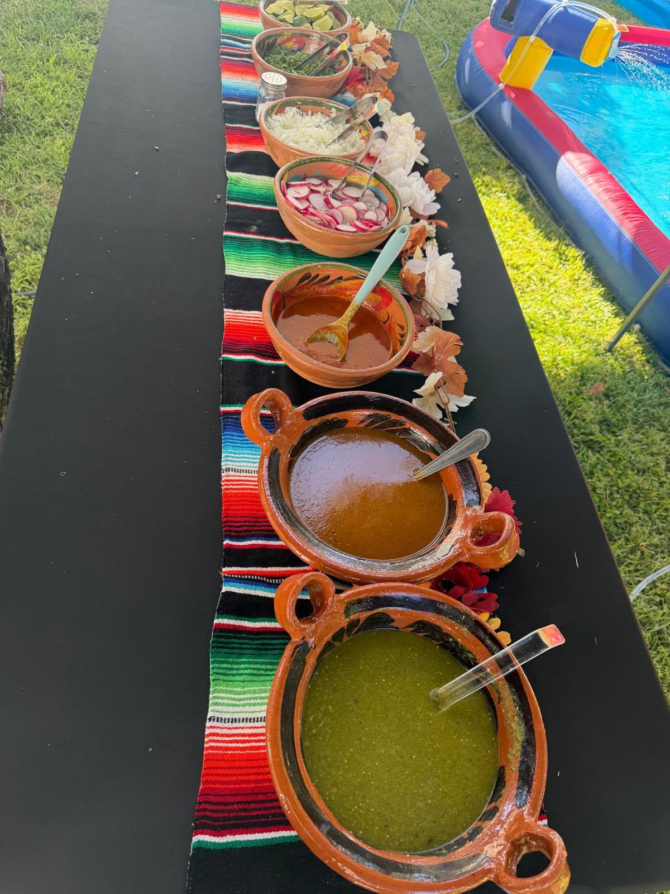
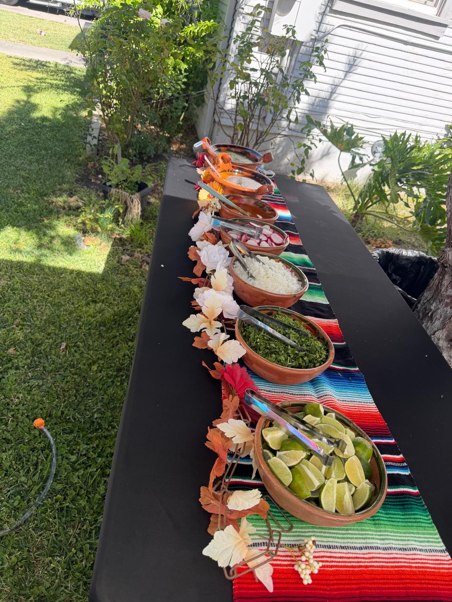
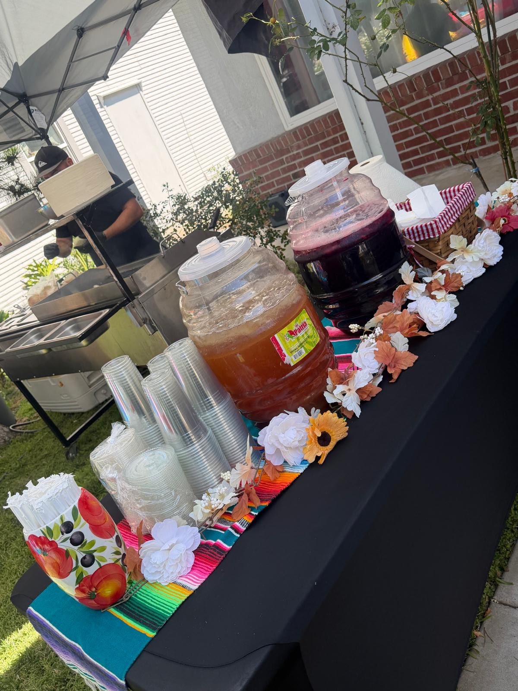
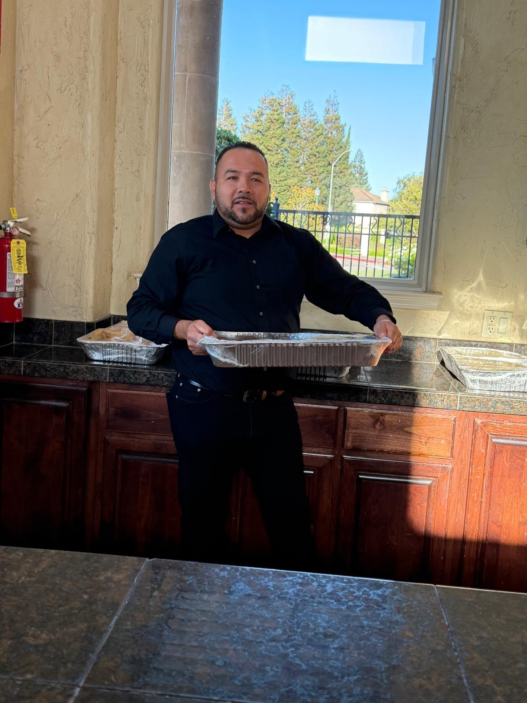
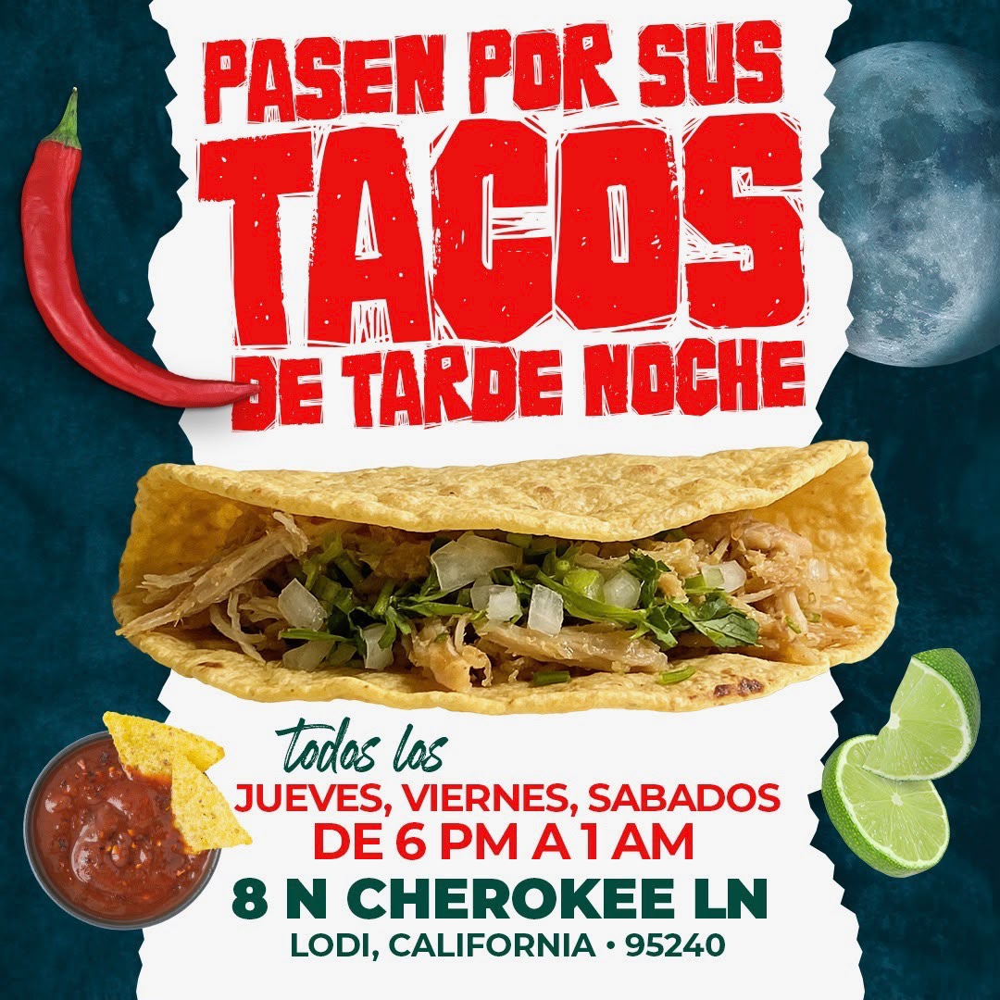

LOS DOS HERMANOSEl Catrín✦ Sabor, Calidad y Tradición · Lodi, CA ✦
Tú disfrutas. Nosotros cocinamos. Servicio de taquiza para bodas, XV años, bautizos, cumpleaños y todo tipo de eventos.
📞 (209) 445-0707 · (209) 278-4405
Tacos preparados al momento frente a tus invitados.
Bodas, XV años, bautizos, cumpleaños y reuniones.
Menú completo con salsas, cebollita, cilantro y limón.
El sabor auténtico que tu fiesta merece.
Taquizas para eventos especiales
Llevamos la taquiza completa hasta tu evento con variedad de guisados, mesa de salsas, aguas frescas y todo lo que necesitas para consentir a tus invitados. Tú solo disfruta la fiesta.

Galería




Pasa por tus tacos
¿No tienes evento? Pásate a nuestro puesto por unos buenos tacos.
📍 Dónde
8 N Cherokee Ln, Lodi, California 95240
🕕 Cuándo
Jueves, Viernes y Sábados
de 6:00 PM a 1:00 AM

Contrataciones
Sin compromiso. Te armamos el paquete perfecto para tu fiesta.